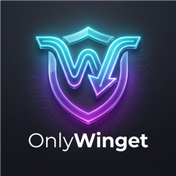
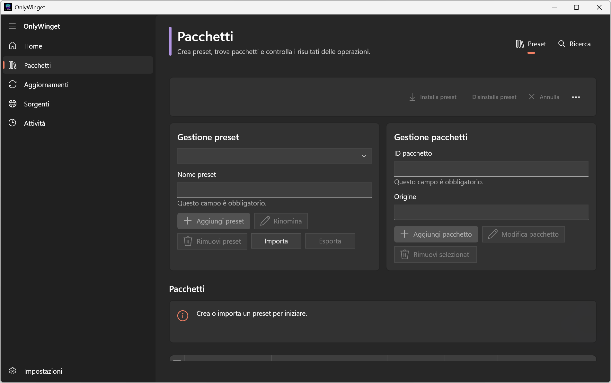
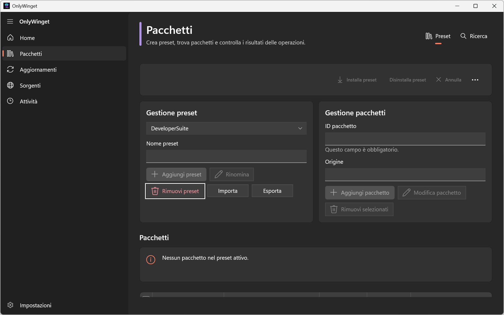
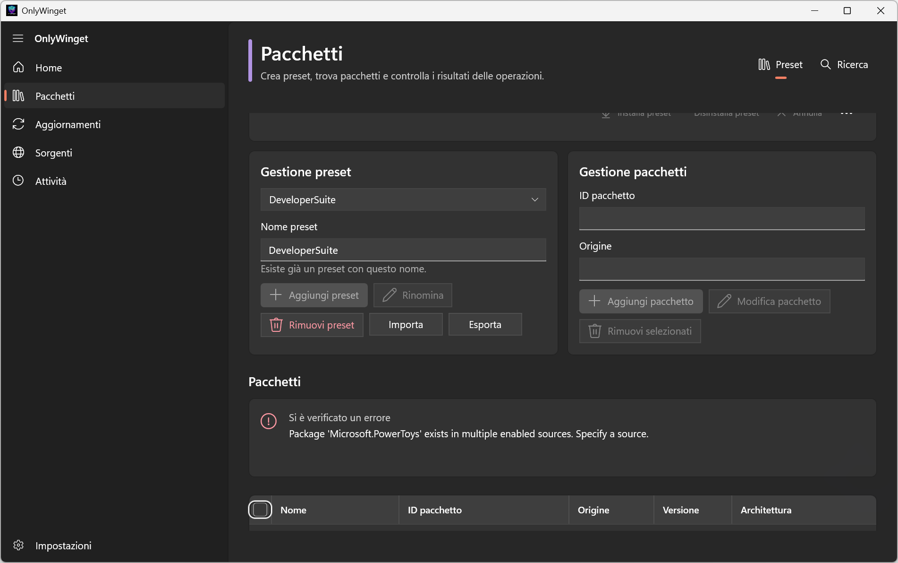
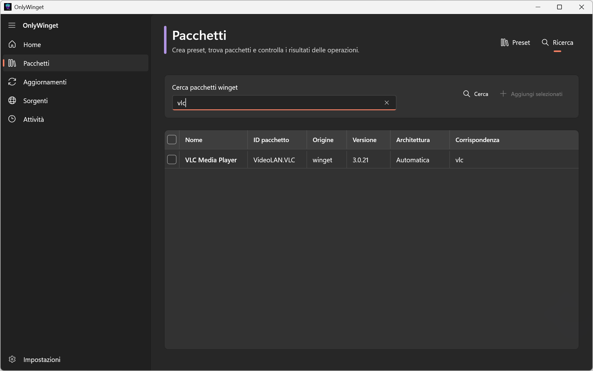
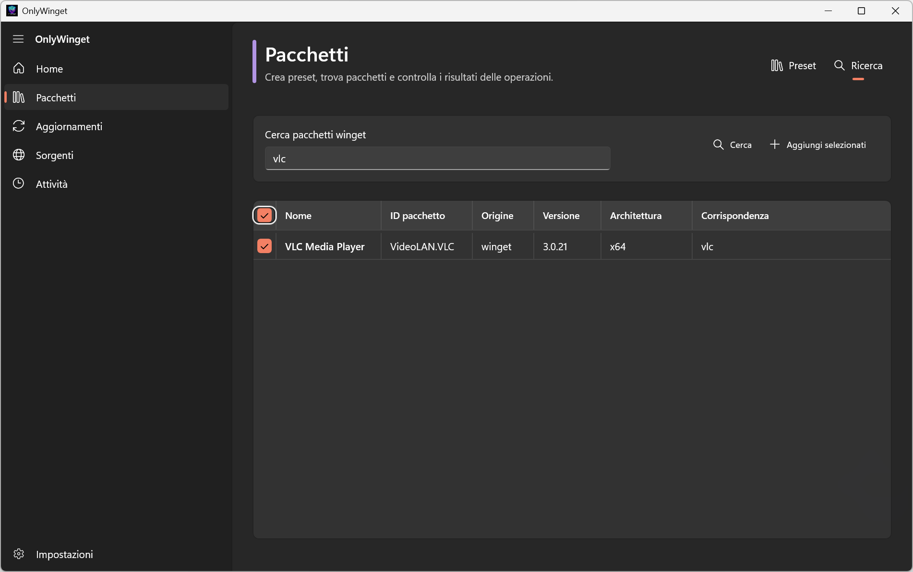
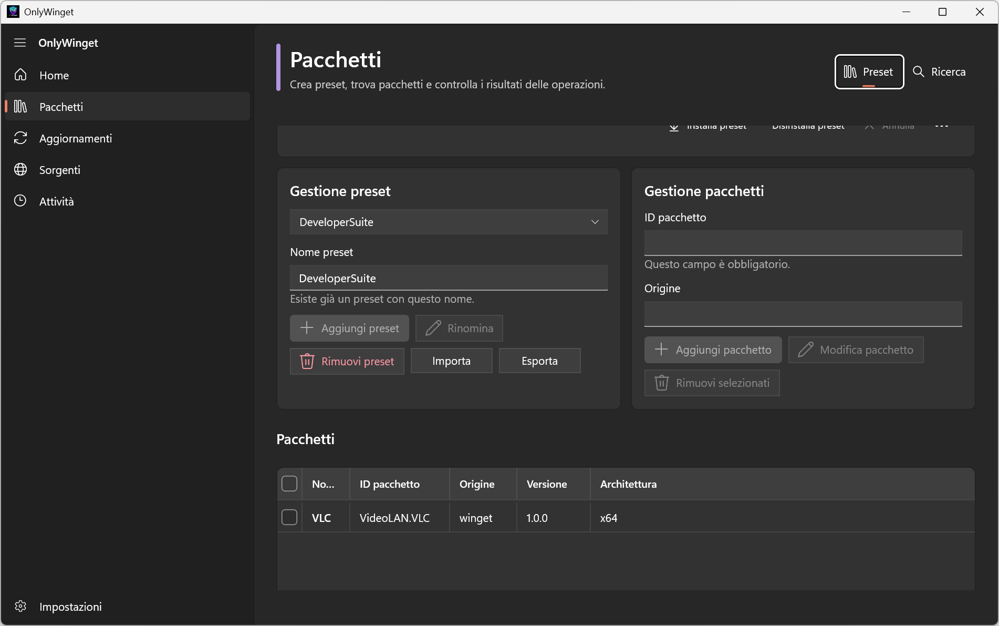
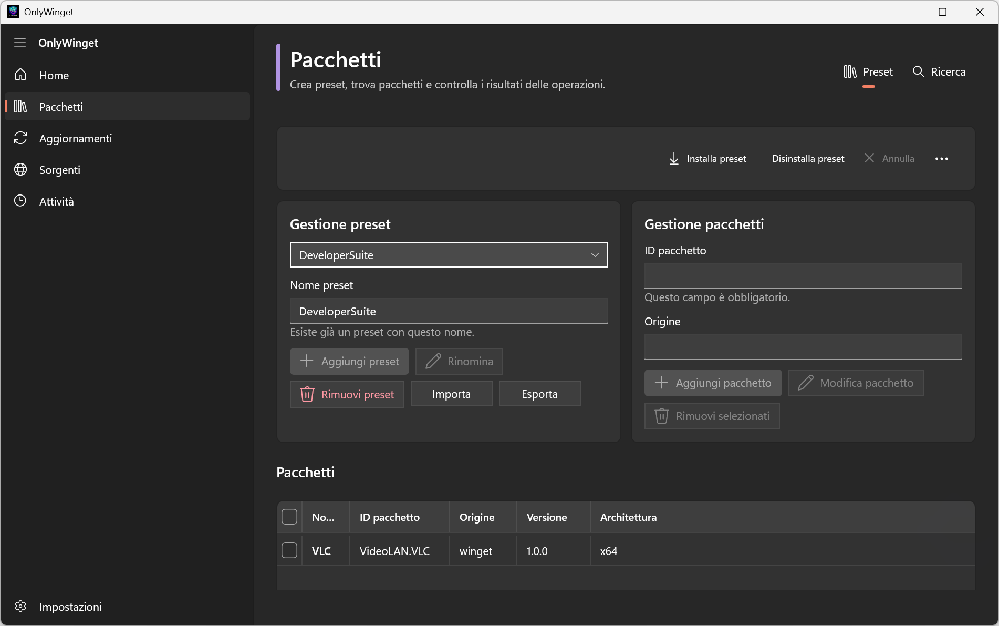
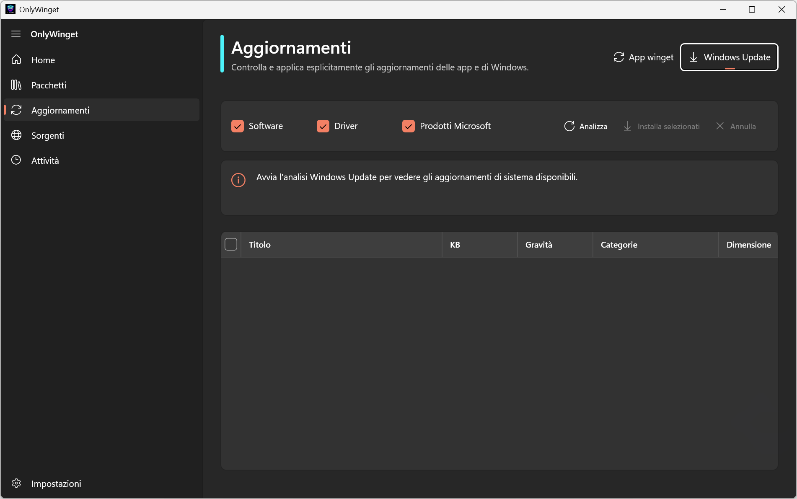
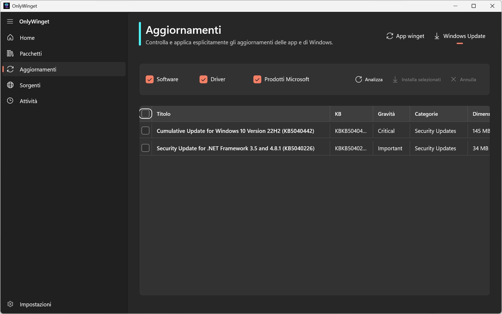

OnlyWingetAn easy-to-use, beautiful application to install, update, and manage all your favorite software at once. Keep your computer clean and fully updated with zero configuration and absolute privacy.
All your essential software utility controls brought together in a modern desktop interface.
Save a list of your daily programs, export it, and install all of them on any new computer in a single step.
Find thousands of safe, official programs immediately. No need to search on multiple websites or download messy installers.
Check and apply Windows updates easily. Keep your system secure without diving into complex control panels.
Everything runs directly on your PC. No online accounts, no registration, and absolutely no data tracking or advertising.
Take a quick look at how easy it is to manage your programs and system updates.








